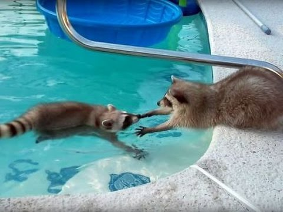
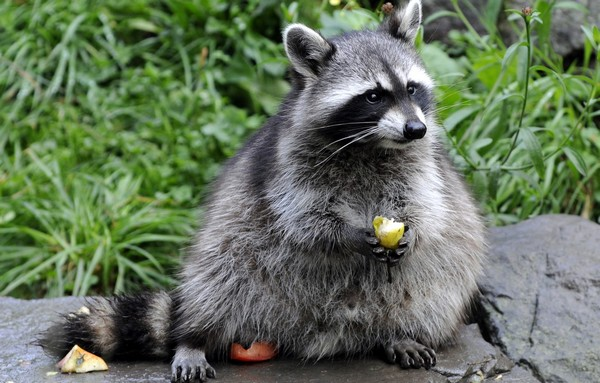

Єнот, герой нашої сьогоднішньої статті, мабуть, є одним з найкумедніших представників ссавців. Вся справа в вдачі цих звірків, так єноти за своєю природою дуже пустотливі і одночасно товариські, миролюбні і доброзичливі, легко йдуть на контакт з людиною. А ще вони безмежно цікаві і поряд з дельфінами, мавпами, слонами, кішками та собаками є найрозумнішими серед тварин. Володіючи високим інтелектом, єноти часто виявляють винахідливість, легко піддаються дресируванню, тому не дивно, що деякі люди навіть мають своїх домашніх єнотів. А що, може наша стаття також надихне Вас замість кішки або собаки завести домашнього єнота.
ЄНОТ - СМУГАСТИЙ ХУЛІГАН
Опис, будова, характеристика
Назва «єнот» йде до нас від індіанського слова «Arakun», яке перекладається як «той, що дряпає своїми руками». Єноти є хижими ссавцями, що належать до сімейства власне єнотів, яке включає в себе чотири види цих звірків. Також близькими родичами єнотів є єнотовидні собаки (їх часто плутають з єнотами), носухи, какоміцлі та кінкажу. А в число далеких родичів єнота входить навіть собака та панда. Найбільш поширеним серед єнотів є єнот-полоскун, якого ще називають «ведмедем полоскуном» або «миючим ведмедем».
Довжина тіла у єнотів зазвичай становить 45-60 см, середня вага єнота в залежності від виду може варіюватися від 2-5 до 8-15 кг. При цьому самці часто більші, ніж самки. Будовою тіла єноти трохи нагадують лисицю або собаку. А ось лапи єнота - важлива відмінна риса цих звірків, вони мають сильно витягнуті подушечки, чимось навіть нагадують людські долоні. Завдяки подібній будові своїх лап, всі єноти володіють відмінними хапальними здібностями.Єноти з легкістю лазять по деревах і можуть маніпулювати різними дрібними об’єктами.
Хвіст єнота довгий і, як правило, пухнастий. Шерсть єнота залежить від його виду, так у єнота-ракоїда вона коротка, в той час як у єнота-полоскуна, косемельського та гваделупського єнотів вона навпаки довша і пухнаста. Що ж колірної розмальовки, то всі єноти мають сірувато-бурий колір, а хвіст у них розмальований поперечними чорно-білими смугами.
Голова єнота досить широка, має коротку і гостру мордочку, та невеликі і округлі вуха.
Місцепроживання
Де живуть єноти? Єноти – уродженці Північної і Південної Америки, їх можна зустріти в лісах від Канади до Аргентини. З відкриттям Америки європейцями, єноти потрапили і в Євразію і один з їх видів, єнот полоскун зміг цілком непогано прижитися в наших широтах. Зокрема популяції єнота полоскуна створені в багатьох країнах Європи і на Кавказі.
Що ж стосується нашої країни України, то в рідному місті автора статті – Львові існує ціле єнотове господарство – «Дім єнота», тобто можна приїхати в гості до єнотів, пограти з ними, для дітей подібна подія точно буде незабутньою. Для того щоб дізнатися більше про “будинок єнота” у Львові, переходьте за посиланням .
Характер та спосіб життя
Єноти мають доброзичливий характер, вони миролюбні, активні і допитливі. Однак, незважаючи на свою миролюбність, вони не є боягузливими, тому в разі небезпеки здатні хоробро захищатися, кусатися і дряпатися. Також можуть загрозливо бурчати, прагнучи налякати потенційного супротивника. В особливо небезпечних ситуаціях єноти можуть ретируватися втечею або піти на хитрий трюк – прикинутися мертвими.
Цікавий факт: всі єноти не тільки з легкістю лазять по деревах, але і непогано плавають, причому можуть плавати навіть у холодній воді, чому сприяє особливий склад їх хутра, що складається на 90% з густого підшерстя, як ніби спеціально пристосованого природою для захисту від холодної води.

Незважаючи на дружелюбність і товариськість, в природних умовах єноти вважають за краще вести одиночний спосіб життя, збираючись разом тільки для спарювання і на період зимової сплячки. І так, єноти, як і ведмеді на зиму впадають у зимову сплячку, причому біологічні механізми сплячки у єнотів схожі з ведмежими, сама сплячка у єнотів триває в залежності від тривалості холодного періоду. Найдовше сплять канадські єноти, у яких зимова сплячка може тривати до 5 місяців, зате єноти, що мешкають в теплих тропіках Центральної Америки, в зимову сплячку не впадають зовсім, з причини відсутності зими в місцях їх проживання.
Харчування
Чим харчується єнот? Єноти – всеїдні, тобто можуть їсти, як і всілякі ягоди, горіхи, жолуді, фрукти, так і різну дрібну живність: жаб, великих комах, молюсків, раків та крабів. Вони вміють досить непогано ловити дрібну рибу.

Утримання в домашніх умовах
Єноти завдяки своєму доброзичливому характеру можуть стати відмінними домашніми вихованцями. Ось тільки не варто заводити єнота, якщо ви живете в тісній квартирі, так як цим тваринам необхідний простір, а на вільному вигулі подібно до кішок або собак вони теж не будуть.
Дуже бажано під єнота виділити цілу окрему кімнату, вона ж буде його вольєром, в якому звір буде відчувати себе вільно. Так як єноти дуже тямущі звірята, з ними можна весело проводити час, грати, але варто дотримуватися і певної обережності, так якщо єнот подумає, що йому загрожує небезпека, він може кусатися і дряпатися. Особливо агресивними єноти бувають в період свого шлюбного сезону. Також під час шлюбного сезону самець єнота може мітити свою територію, що буде мати наслідок у вигляді дуже неприємного запаху. Але в цілому єнота можна привчити ходити в лоток, практично як кішку або собаку.

Також варто врахувати, що єноти можуть бути вельми пустотливими, навіть хуліганистими звірками, проживаючи в будинку, вони можуть наробити всякої шкоди, наприклад, порозбивати весь посуд на кухні, перекинути дорогий телевізор, і так далі. Щоб уникнути цього їх не варто випускати з своєї кімнати-вольєра (принаймні без нагляду), попередньо прибравши звідти всі цінні предмети.
А ще єноти – сутінкові тварини, а значить, маючи такого вихованця в будинку, вам потрібно буде підлаштуватися під його природний ритм, вдень єнот буде, швидше за все, спати, зате ввечері і вночі буянити. Годувати його також треба буде ввечері і вночі, в загальному якщо ви «сова» по біоритму, то з єнотом вам буде простіше, ніж людям «жайворонкам».
Чим годувати домашнього єнота? Частково всеїдного єнота можна годувати тим же, що він їсть в природному середовищі: це різні ягоди, фрукти, горіхи. Крім цього єнотів можна годувати спеціалізованим кормом для кішок і собак, але тільки преміум класу. Можна давати м’ясо і рибу, причому як сире, так і варене, головне не дуже жирне. В якості м’яса для єнота відмінно підійде курка, яловичина, індичка, телятина і кролик. З фруктів єноти відмінно їдять: яблука, груші, виноград, банани, персики, сливи. З овочів єнотам будуть корисні: морква, свіжий горошок, спаржа, кабачок.
Цікаві факти
- Єноти – першокласні злодюжки, а тому, перебуваючи поруч з ними, не позіхайте, так як вони запросто можуть поцупити все, що погано лежить.
- Єноти не тільки першокласні злодюжки, але ще і першокласні зломщики, так зоологи якось проводили випробування, на яких єноти за 30 хвилин зметикували, як відкрити десять замків, щоб отримати частування.
- Спілкування з єнотами робить благотворний вплив на дітей з аутизмом, допомагає їм розкріпачитися, зняти комплекти, так з’явився навіть спеціальний термін – єнототерапія (лікування єнотами).